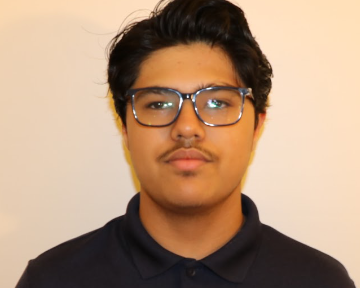

Hello!

Hi, my name is Hitarth Shukla and I am a High School student who has a passion for software engineering. There is only one thing that is bringing our world together even when we can not see each other, visit each other, or talk to each other and has the potential for almost anything to be built with it, software engineering. My dream is to be a part of the team that lets us build anything that we can think of, and that is to be a software engineer. To achieve this, I will graduate from a university with a Masters degree in computer science. After I receive my masters degree, I plan on becoming a software engineer that can make an impact on the world.
To achieve my dream of becoming a software engineer I have cultivated skills to help me. I have learned skills such as: HTML, CSS, and JavaScript for front end development. I have also learned Java and Python for back end development. After learning these skills I have developed numerous applications some of which being a todo list and a goals list with an integrated Pomodoro timer to help people with time management. I have also made a website to help prepare on coming high schoolers, that gives details about what tests and other preparations they can do for college.
In school I have also joined the Dublin High School’s Engineering and Design Academy to further gain knowledge in the area of computer science. As an extracurricular I have also joined a club System Overload Robotics who compete in the First Competition Robotics to learn more about how computer science can be integrated with robotics. I am also ambitious and because of this, am trying to learn application development and data basing to further my knowledge. I have also taken Advanced Placement Computer Science Principles to further grasp how programming is used in the world around us and am currently enrolled in Honors Principles of Engineering to learn about engineering as a whole, and the machines upon which software is used. In the future I plan to take courses such as Advanced Placement Computer Science Application to learn more about the applicable use of software engineering.
All of my experiences with computer science so far have taught me about how much I want to pursue and grow in the field. I have learned many important aspects in the field as well as how important it is to keep learning with such an expandable field such as computer science. Overall, I hope to accomplish my goals and achieve everything I have set for myself. And thank you for taking the time to read this, and please feel free to go through the rest of my site.